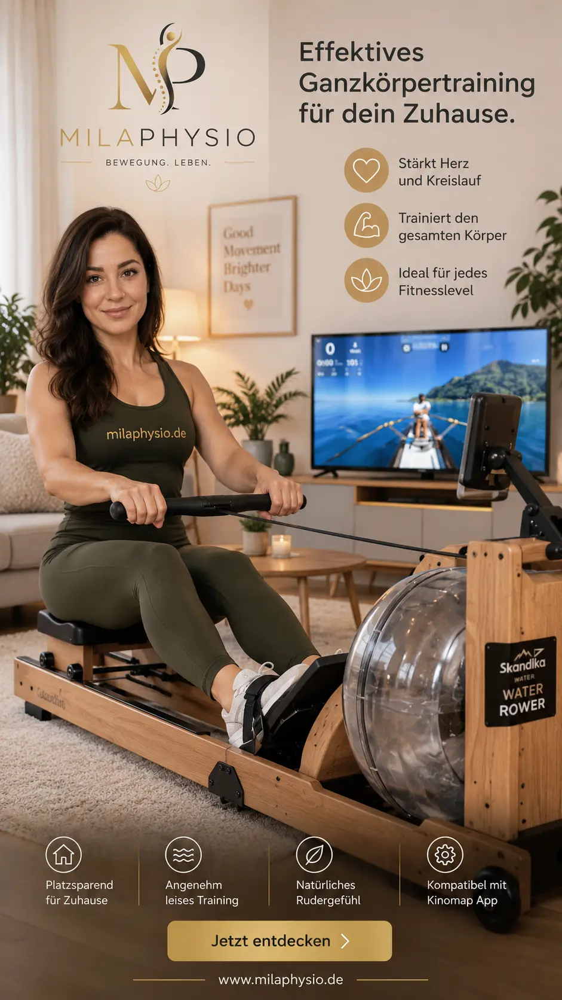

Skandika Wasserrudergerät Lykke
Hochwertiges Wasserrudergerät aus Holz für abwechslungsreiches Ganzkörper- und Ausdauertraining zu Hause.
Bei Amazon kaufenMein persönlicher Favorit für zu Hause
Dieses Wasserrudergerät gehört zu meinen persönlichen Favoriten für das Training zu Hause.
Skandika ist ein Unternehmen mit Sitz in Essen und bringt viel Erfahrung aus dem Fitness- und Outdoor-Bereich mit. Das Lykke verbindet ein hochwertiges Holzdesign mit einem Wasserwiderstand und lässt sich dadurch sehr schön in den Alltag integrieren.
Was ich daran besonders mag, ist das Gefühl beim Rudern. Ich liebe das Geräusch des Wassers während der Bewegung. Zusammen mit der Darstellung einer Ruderlandschaft auf dem Bildschirm entsteht für mich ein ganz besonderes Trainingsgefühl.
Manchmal fühlt es sich fast ein bisschen wie Urlaub an. Genau das macht für mich einen großen Unterschied: Das Training fühlt sich nicht einfach wie Training an, sondern macht mir wirklich Spaß.
Was mir am Skandika Lykke gefällt
Das Lykke ist für mich besonders interessant, wenn ein Rudergerät nicht nur funktional sein soll, sondern auch Freude am regelmäßigen Training machen soll.
Wasserwiderstand
Der Wasserwiderstand vermittelt beim Rudern ein besonders natürliches Trainingsgefühl.
Ganzkörpertraining
Beim Rudern werden viele große Muskelgruppen gleichzeitig in die Bewegung einbezogen.
Für zu Hause
Das Gerät ist für das Training in den eigenen vier Wänden konzipiert und passt auch optisch gut in einen Wohnbereich.
Bluetooth & Apps
Das Lykke verfügt über Bluetooth und kann mit kompatiblen Trainings-Apps genutzt werden.
Echtholz-Design
Das massive europäische Buchenholz verleiht dem Rudergerät eine hochwertige und wohnliche Optik.
Trainingslandschaften
Mit einer kompatiblen App oder einem geeigneten Bildschirm kann das Training abwechslungsreicher gestaltet werden.
Vorteile und mögliche Grenzen
Vorteile
- Angenehmes Rudergefühl durch Wasserwiderstand
- Für Ganzkörper- und Ausdauertraining geeignet
- Hochwertige Optik aus europäischem Buchenholz
- Bluetooth und App-Kompatibilität
- Praktische Aufstellmöglichkeit und Transportrollen
- Besonders angenehmes Geräusch des Wassers beim Rudern
Mögliche Grenzen
- Ein Rudergerät benötigt deutlich mehr Platz als kleine Trainingshilfsmittel.
- Die richtige Rudertechnik ist entscheidend für eine kontrollierte und effiziente Bewegung.
- Bei bestehenden Beschwerden sollte die Belastung individuell angepasst werden.
- Ein Trainingsgerät ersetzt keine individuelle physiotherapeutische Untersuchung oder Behandlung.
Worauf ich beim Rudern achten würde
Beim Rudern sollte die Bewegung kontrolliert und technisch sauber ausgeführt werden. Besonders wichtig ist ein harmonisches Zusammenspiel von Beinen, Rumpf und Armen.
Für Einsteigerinnen und Einsteiger würde ich zunächst mit moderater Belastung und kurzen Trainingseinheiten beginnen und die Belastung langsam steigern.
Bei Schmerzen, ungewöhnlichen Beschwerden oder einer deutlichen Verschlechterung sollte das Training beendet und die Ursache gegebenenfalls physiotherapeutisch oder ärztlich abgeklärt werden.
Mein Fazit
Wenn ich selbst ein Rudergerät für zu Hause auswählen würde, wäre das Skandika Lykke definitiv sehr weit oben auf meiner Liste.
Für mich ist es die Kombination aus dem angenehmen Wasserwiderstand, dem natürlichen Holzdesign und vor allem dem besonderen Gefühl beim Rudern, die dieses Gerät so interessant macht.
Das Geräusch des Wassers und die Ruderlandschaft auf dem Bildschirm machen das Training für mich zu etwas, auf das ich mich tatsächlich freue. Genau deshalb ist dieses Rudergerät mein persönlicher Favorit für zu Hause.
Hinweis: Diese Seite enthält Affiliate-Links. Wenn Sie über einen solchen Link einkaufen, kann ich eine Provision erhalten. Für Sie entstehen dadurch keine zusätzlichen Kosten. Meine Empfehlungen basieren auf meiner persönlichen Einschätzung und ersetzen keine individuelle medizinische Beratung.